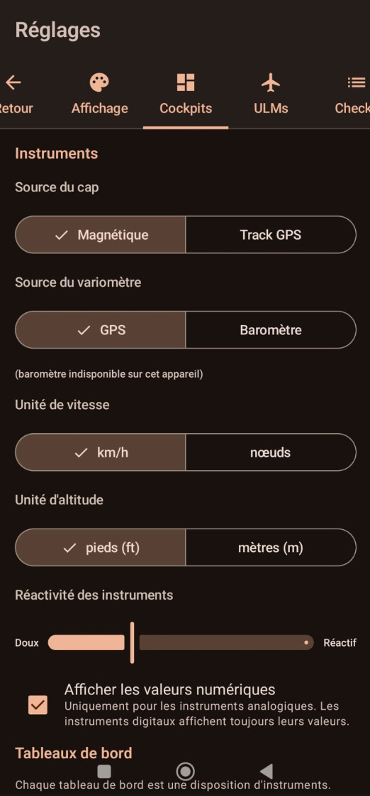
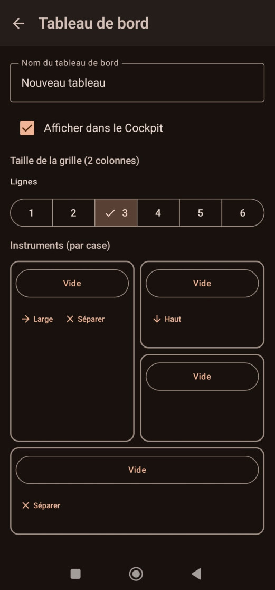

🛩
Cockpits
Sources EFIS, unités, tableaux de bord, carte mobile
Cap · magnétique / route GPS
Vitesse · km/h / kt
Altitude · ft / m


Possibilités
Sources & unités EFIS
- Source du cap : magnétique ou route GPS (track).
- Source du variomètre : GPS ou baromètre (si le capteur est présent).
- Unité de vitesse : km/h ou nœuds.
- Unité d'altitude : pieds (ft) ou mètres (m) — appliquée à tous les instruments (le variomètre passe alors en m/s).
- Réactivité des instruments : curseur doux ↔ réactif (lissage).
- Affichage des valeurs numériques sur les instruments analogiques.
Tableaux de bord
- Grille 2×N avec fusion de cellules pour composer les dispositions.
- Ajout / édition / suppression (menu ⋮) et réordonnancement des tableaux de bord.
- Case « Afficher dans le Cockpit » : slidez gauche/droite pour changer de tableau.
- Bouton « Options » d'une case : couleur / style du contour (Couleur par défaut, Carbone, Métal, ou une couleur sombre spécifique) et gestion de la case (fusionner en large / en haut, séparer) — de quoi repérer un instrument d'un coup d'œil.
Cartes
- Orientation de la carte mobile : Nord en haut ou Cap en haut.
- Téléchargement / mise à jour de la carte VFR hors-ligne (fond + données OpenAIP), avec vérification des mises à jour. À faire en Wi-Fi.